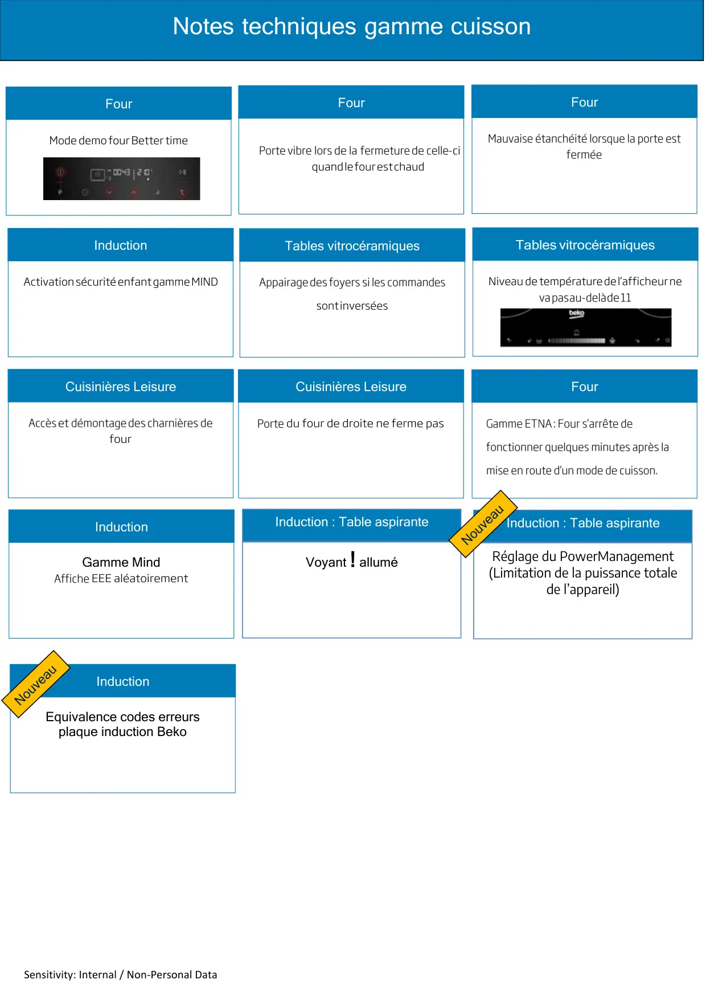

Sensitivity: Internal / Non-Personal DataNotes techniques gamme cuissonTables vitrocéramiquesAppairagedesfoyerssiles commandesInductionvapasau-delàde11Cuisinières LeisureAccèsetdémontagedescharnièresdeFourFourPortevibrelorsdelafermeturedecelle-ciCuisinières LeisurePorteFourMauvaise étanchéité lorsque la porte estferméeFourGamme ETNA: Four s’arrête defonctionner quelques minutes après lamise en route d’un mode de cuisson.InductionGamme MindAfficheVoyant ! alluméInduction : Table aspiranteInduction : Table aspiranteRéglage du PowerManagement(Limitation de la puissance totalede l’appareil)InductionEquivalence codes erreursplaque induction Beko
1 / 1Liens de ce document (13)
PDFAppairage des foyers induction3 p.PDFActiver - désactiver secu enfant plaque Mind1 p.PDFNote informations table vitro céramique surchauffe pendant fonctionnement1 p.PDFChgt charnière four LEISURE2 p.PDFNote d'information mauvaise fermeture de porte four Leisure1 p.PDFPorte four Beyond Prologue vibre1 p.PDFNote Technique Modification Joint Porte Four Etna1 p.PDFNote Technique Four Pyrolyse Etna S arrete de Fonctionner Quelques Minutes Après Sa Mise en Route2 p.PDFTableAspirante Voyant ! Allumé1 p.PDFInduction hotte intégrée réglage PowerManagement1 p.PDFEquivalence codes erreur Induction5 p.PDFMode démo four Better timer1 p.PDFNote technique Cuisson Mind Affiche E E1 p.